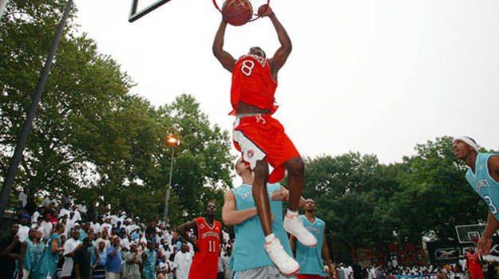
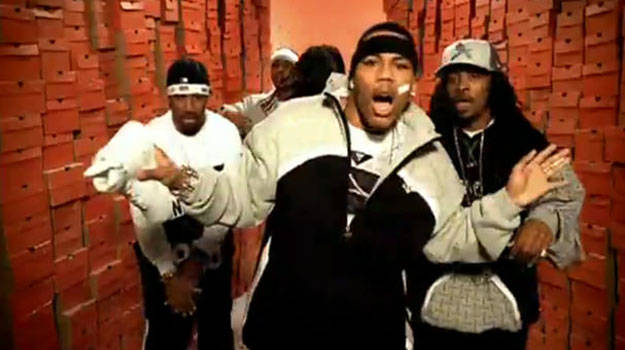

1982
Nike Introduces the Air Force 1
When Nike introduced the Air Force 1 in 1982, little did they know they had a cultural phenomenon on their hands. Designed by Bruce Kilgore, the Air Force 1 was the first basketball sneaker to feature Nike Air technology, which was previously limited to the Swoosh's running shoes. The Air Force 1 also introduced the concept of the Nike Cupsole, making it a top performance model at the time. Named after the aircraft which carried the President of the United States around, Kilgore actually took inspiration from Notre Dame Cathedral in designing the shoe's midsole.
1983
Moses Malone Takes Home Both Regular Season and NBA Finals MVP Honors in the Air Force 1
The Air Force 1 was put on the map largely due to Moses Malone's 1982-83 season. Wearing the Air Force 1s, Malone won his third career NBA MVP award, averaging 24.5 points per game to go along with 15.3 rebounds per game. For an encore, Malone led the Philadelphia 76ers to an NBA title over the Los Angeles Lakers, taking home NBA Finals MVP honors in the process. Malone's heroic Finals performance was highlighted by a Game 3 in which he scored 28 points with 19 rebounds and six assists. A ringing endorsement for the Air Force 1, indeed.
1984
Nike Discontinues the Air Force 1
Despite Malone's dominance, Nike would discontinue the Air Force 1 in 1984. Originally slated for just a two-year run, the Swoosh saw the sneaker as just another basketball shoe. Legend has it that Bruce Kilgore was already working on designs for shoes two to three seasons in the future by the time the Air Force 1 released. As is usually the case, though, people want what they can't have.
1986
The Air Force 1 Becomes the First-Ever Retro Sneaker
Whether you agree with the practice or not, the Air Force 1 was instrumental in starting the retro craze. With sneaker aficionados willing to travel from New York to Baltimore just to cop a pair of Air Force 1s, or "Uptowns" as they came to be known, Nike made an unprecedented move by bringing back the sneaker in 1986. This would give birth to the present day trend of "retro-ing" sneakers. This time around, Nike added the modern italic logo with the Swoosh on the back of the shoe.
2002
Kobe Bryant Plays at Rucker Park Wearing the Air Force 1
What Moses Malone was to the Air Force 1 in the 1980s, Kobe Bryant was in early Oughts. On July 18, 2002, Bryant played in the Entertainers Basketball Classic at legendary Rucker Park in New York for Irv Gotti's Murder Inc. team. Kobe laced up a pair of Air Force 1s for the occasion and proceeded to put on a show for those who turned out. Unfortunately, rain shortened the event, but nonetheless it was another "Mamba Moment."
2002
Nelly and the St. Lunatics Release "Air Force Ones"
Since its reissue, the Air Force 1 would remain a regional favorite. However, off the strength of Nelly and the St. Lunatic's single "Air Force Ones" in 2002, the sneaker would finally infiltrate the mainstream. In the song, Nelly and his posse boast about sneaker purchases. Among those who appeared in the video copping a pair of Air Force 1s were Marshall Faulk, Torry Holt, Ray Lankford, Ozzie Smith and Birdman.
2002
Kobe Breaks Out the Air Force 1 Again, This Time on the NBA Hardwood
Kobe's sneaker free agency period in 2002-03 was one of the more exciting times in on-court sneaker history. On November 11, 2002, Bryant went back to the sneakers that served him so well at Rucker Park. This time out, Kobe laced up in a white and gold pair and proceeded to drop a triple-double. For the night, Kobe netted 15 points with 11 rebounds and 11 assists. On the heels of Nelly and Kobe, Air Force 1 mania was at a fever pitch.
2007
The Air Force 1 Celebrates Its 25th Anniversary
The Air Force 1 turned 25 in 2007. To celebrate, an All-Star lineup of rappers put out the single "Classic (Better Than I've Ever Been)" as a tribute to the sneaker. Featuring Kanye West, Nas, KRS-One and Rakim, the single would go on to be nominated for a Grammy for Best Rap Collaboration. In honor of the shoe's anniversary, Nike put out two special edition Air Force 1s made of crocodile and anaconda leather, which retailed for $200,000 a piece.
2012
Kanye West Debuts the Mask in a Pair of Air Force 1s

Kanye West's Maison Martin Margiela mask was his signature look for the Yeezus Tour. However, Kanye actually debuted the look in late 2012 while doing a string of shows at Revel Ovation Hall in Atlantic City. Decked out in an all-white pair of Air Force 1s, the appearance brought the sneaker back to prominence after experiencing a brief lull in popularity. It was at the same show that Kanye would announce he and Kim Kardashian were set to have a baby.
2013
Drake Carries On the Air Force 1's Hip-Hop Legacy
In February of 2013, Drake picked up where Kanye left off in carrying on the Air Force 1's hip-hop legacy by rocking a pair of Uptowns in the "Started From the Bottom" video. Much like Yeezy, Drizzy opted for an all-white get-up to go with his all-white Air Force 1's. From being discontinued to turning into a pop-cultural icon, the Air Force 1, like Drake, could proudly proclaim "started from the bottom, now we here."